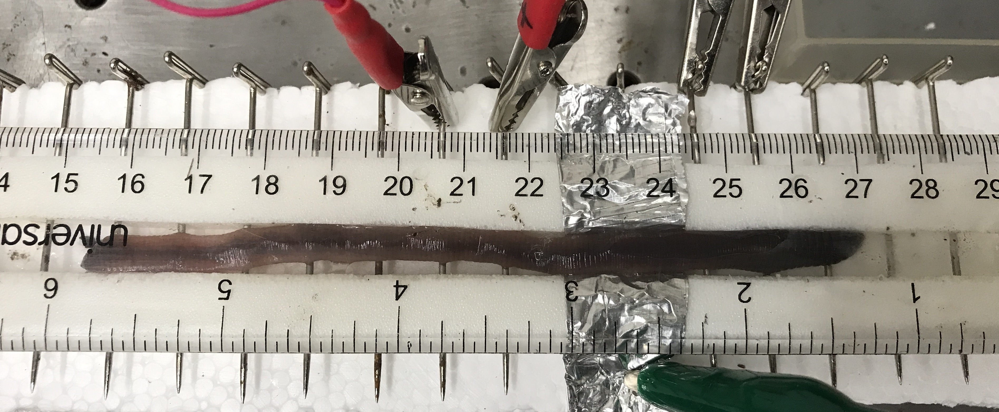

Lab Manual
Contents
Lab Manual¶
Hardware and Software Setup¶
Input¶
There are three inputs to the ADC available today.
Channel 01 (AI0) and Channel 1 (AI1) each receive input from a separate differential amplifier. For some experiments, you will only need one of these channels, for others you will need both. For any experiments in which you only need one differential measurement, make sure that you are only digitizing the channel that you need (using the ‘collections’ parameter of the AnalogInput node in the bonsai workflow).
Channel 22 (AI3) receives input from a floating voltage source (a copy of the voltage sent to the “stimulation” electrodes). The stimulation electrodes will be used to evoke action potentials in the Giant Fiber(s).
Input Range¶
Adjust the voltage range for each channel in the AnalogInput node parameters if needed to maximize the signal resolution based on your nerve cord recordings (options include: ±0.2 V, ±1 V, ±5 V, ±10 V). I would recommend starting with ±1 V for the input from each differential amplifier and ±10 V for the stimulus monitor.
Sampling Rate¶
Today you should use a sampling rate of 30kHz. Adjust the buffer samples according to your visualization preferences (I personally like a refresh interval of about 500msec, but 100msec might help you better visualize the CAP at stimulus threshold if you are not used to interpreting the signal yet).
Recording Chamber setup¶
You should have a recording chamber that consists of a channel lined with metal pins (spaced 1 cm apart) running perpendicularly to its length. This is the channel where your experimental preps will be placed (wet fibers or earthworms). The pin heads stick out on the outside of the chamber so that you can clip measurement and stimulation electrodes to them. You should have a sturdy strip of aluminum foil. You should have a clear piece of plastic to place over the channel and constrain movement. You can optionally use two strips of foam to place in the ends of the channel to constrain the earthworm’s movement laterally if needed.
Part I. Fiber Arts Nervous System¶
For these experiments, you will only need one differential amplifier. You only need to save the data from the first of the two experiments in Part I.
Setup¶
Moisten a long (15cm) towel/string/yarn/fabric/etc with tap water
Lay the wet (but not dripping) fiber in the recording chamber channel (across the “bed of pins”), making sure it is making contact with all pins
Clip the two leads of the stimulation electrode to two pins 1 cm apart from each other near one end of the wet fiber (does not matter which lead goes on which pin yet)
Clip the two measurement electrodes from one differential amplifier to two pins 1 cm apart from each other near the other end of the wet fiber (but leave room for the ground).
Grounding the preparation: Clip the ground (black) aligator clip lead from the differential amplifier to one of the pins between the measurement electrodes and the end of the fiber.
Experiment 1:¶
Set the stimulus isolation unit to deliver 0.2 msec, 0.1V pulses at 2Hz.
Enble the Matrix writer node and specify a filename for the experiment.
Start the bonsai workflow and visualize both the stimulation and measurement windows.
Turn the stimulus on repeat for 5-10 pulses.
stimulus artifact
Even with this relatively low stimulus amplitude, you should see a brief, biphasic deflection in the differential measurement near the time of the stimulation pulse. This is the stimulus artifact, which results from virtually instantaneous, passive current spread from stimulating electrodes to measurement electrodes.
Stop the bonsai workflow.
Experiment 2:¶
Take the fiber off of the bed of pins
Place a strip of foil across the canal between the stimulation pins and measurement pins.
Connect the foil to earth ground with a wire clip.
Note
You may now need to unclip the ground (black) lead from the differential amplifier. It sometimes sets up a ground loop(?) and causes more noise when both grounds are plugged in. If there was no noise increase - no problem - leave them both plugged in. You can also try using the ground lead of the differential amplifier to ground the foil instead of the earth ground from the table.
Place the wet fiber back in the recording chamber and make sure that it is firmly seated and touching all pins and the foil strip.
Disable the Matrix writer node and specify a filename for the experiment (with a
.binextension).Start the bonsai workflow and visualize both the stimulation and measurement windows.
Turn the stimulus on repeat. The stimulus artifact should be significantly diminished by the grounded foil (if it is not, let’s troubleshoot before moving on). Why do you think this is?
Increase the stimulus amplitude to 3V to make sure that the stimulus artifact remains minor in the measurement signal.
Stop the bonsai workflow.
Set aside the wet fiber to make way for the earthworms…
Part II. Earthworm Giant Fiber System¶
General Physiology Setup¶
Read through each experiment in this section before actually getting and setting up the worm for the experiment. You will likely need a separate worm for each experiment. You may need to go through more than one worm for each experiment. Once the worm is under anesthesia, the time window to perform these experiments is limited and can be finicky.
Anaesthetize the worm by placing it in 10% alcohol solution3. Leave it in the anaethesia until you can pick it up without it wriggling away. The typical time for sufficient anesthesia is ∼5-10 min (check on it at 5 min and then every min thereafter until ready). Leaving the worm in anaesthesia too long will lead to an unresponsive nervous system (and eventually death). Hallmarks of anesthetic effectiveness are a lack of worm movement and a cessation of the escape withdrawal reflex. The escape withdrawal reflex can be observed by tapping the tail and head with a plastic probe (or lightly pinching with fingers). An alert worm will exhibit a shortening muscle contraction in response to this stimulus, but an anesthetized worm will not have this reflex. Earthworm anesthesia is a problem: dilute alcohol acts very slowly, and often leaves a squiggling worm that is difficult to keep in the recording apparatus (and later, to dissect), while concentrated alcohol “pickles” the outside of the worm, knocking out the responses of touch receptors and threatening the response of the giant fibers. Use the minimum anesthesia you can tolerate. After suitable anesthesia, briefly rinse the alcohol off the worm by dunking it in tap water and allow the excess water to drain off.
Place a strip of foil across the channel of the recording chamber. Clip earth ground to it (clipping both the foil and a pin at the same time can help stabilize)
Lay out the worm dorsal side up on the bed of pins in the recording chamber. Aim for the foil to lay just behind the clitellum of the worm. An annelid worm’s nerve cord is near the ventral surface of the worm. Place the cover on top of the worm, constraining it in the channel. (use channel plugs at either end of the worm if needed)
The worm should not be too wet, but if it gets too dry during the experiments, lift the cover to moisten it with a dropper (of either anaesthesia or water depending on current anaesthetic depth and desired depth). Note that the anaesthetic will tend to dry out the skin.
Experiment 1: Presenting… the CAP itself¶
In this experiment, you will examine the CAP waveform. By measuring the cap with varying inter-electrode distance, you can apply your knowledge gained from past labs and infer a variety of information about the anatomical and physiological features of the giant fiber system.
For this experiment, you will only need one differential amplifier.
Stimulation Preparation¶
{kind=link}
Figure 1: Worm in recording chamber. Anterior to the right and posterior to the left. Foil strip under worm between stimulating electrodes (right) and measurement electrodes in initial position (left)
Clip the stimulation electrodes to two pins 1 cm apart near the anterior end of the worm.
Think about it
The stimulation electrodes will be used to evoke an action potential in the Giant Fibers at the anterior end of the worm, which will be measured at the posterior half of the worm. Which of the two stimulation leads (+ or -) do you think should be closer to the differential measurement electrodes? Why?
Clip the measurement electrodes of one differential amplifier to two pins 1 cm apart from each other at around the middle of the worm (does not matter which of the two is closest to the stimulation).
Set the stimulus isolation unit to deliver 0.2 msec pulses at 0.1V and 0.5 Hz
Disable the Matrix Writer node.
Start the bonsai workflow and visualize both the stimulation and measurement windows.
Turn the stimulus isolation unit on repeat. With a low initial stimulus amplitude, likely no CAP will be visible. If it is, decrease the stimulus amplitude until you do not see it anymore.
Slowly increase the stimulus amplitude until you see a CAP at around the time of the stimulus. Hover around the lowest stimulus amplitude that evokes a reliable CAP.
Warning
Do not exceed 5V on the stimulus output voltage if you are still not generating a CAP. Turn the amplitude back down and try to: adjust the stimulus electrodes, roll the worm so its ventral side is down, dry off the stimulated region of the body, and/or get a new worm.
Turn off the stimulus and stop the bonsai workflow
Measure the distance between the stimulus electrodes and the measurement electrodes.
Experiment Protocol¶
Enable the Matrix writer node and specify a relevant filename for the experiment (anding in
.bin.Start the bonsai workflow.
Turn the stimulus on repeat for just 5 pulses (at the amplitude you determined during stimulus preparation for reliably evoking a CAP).
Note
You may need to manually trigger each stimulus pulse instead of on automatic repeat. If the worm is too active or there is too much noise from muscle potentials, you will need to time your stimulus pulses for when the worm (signal) is calm.
Move the measurement electrode furthest away from the stimuluation away by one pin (1 cm)
Turn the stimulus on repeat for just 5 pulses. (though see note above)
Repeat #4 and #5, moving the second measurement electrode further away by one pin on each bout.
When the second measurement electrode has gotten 4 cm away from the first, (make sure you are still measuring a CAP), move the first measurement electrode down one pin away from it and repeat the stimulus for 5 pulses.
Then, finally, return the measurement electrodes to their original location and repeat the stimulus for 5 pulses.
Stop the bonsai workflow.
Clean up your worm by dipping it in tap water and return it to the soil.
Set up for Experiment 2 before getting another worm.
Experiment 2: CAP conduction velocity¶
For this experiment, you will use two differential amplifiers (though one could be used: if using one amplifier, do multiple bouts, each with different distance between both measurement electrodes and the stimulating electrode).
Preparation¶
Attention
This needs to be repeated for a different worm, or if the first worm was re-positioned.
Clip the stimulation electrodes to two pins 1 cm apart near the anterior end of the worm. (Use the same logic as in Experiment 1 to decide on the orientation of the cathode and anode relative to the measurement electrodes)
Clip the measurement electrodes of one differential amplifier to two pins 1 cm apart from each other at around the middle of the worm (does not matter which of the two is closest to the stimulation).
Clip the measurement electrodes of the second differential amplifier to two pins 1 cm apart from each other and 2-5cm from the first electrodes (depending on the length of your worm). Note the distance between them.
Disable the Matrix Writer node.
Start the bonsai workflow and visualize both the stimulation and measurement windows.
Set the stimulus isolation unit to deliver 0.2 msec pulses at 0.1V and 0.5 Hz
Turn the stimulus isolation unit on repeat. With a low initial stimulus amplitude, likely no CAP will be visible. If it is, decrease the stimulus amplitude until you do not see it anymore.
Slowly increase the stimulus amplitude until you see a CAP at around the time of the stimulus. Hover around the lowest stimulus amplitude that reliably evokes a CAP.
Note
Once you find the threshold, you may need to trigger the stimulus manually in between bouts of muscle activity on the recording electrodes.
Turn off the stimulus and stop the bonsai workflow
Measure the distance between the stimulus electrodes and the measurement electrodes.
Experiment Protocol¶
Enable the Matrix writer node and specify a filename for the experiment.
Start the bonsai workflow.
Turn the stimulus on repeat for 10 pulses (at the amplitude you determined during stimulus preparation for reliably evoking a CAP).
Note
You may need to manually trigger each stimulus pulse instead of on automatic repeat. If the worm is too active or there is too much noise from muscle potentials, you will need to time your stimulus pulses for when the worm (signal) is calm.
Stop the bonsai workflow.
Clean up your worm by dipping it in tap water and return it to the soil.
Set up for Experiment 3 (time permitting) before getting another worm.
Otherwise, move on to the Housekeeping section.
Additional Exploration (time permitting)¶
Experiment 3: Mechanical stimulation¶
This experiment requires two differential amplifiers.
This is one of the most complicated experiments, as it requires a defined level of anesthetization. While the worm should not be moving anymore, the giant fibers have to be responding to mechanical stimuli. You may need to test several worms with varying exposure to the anesthetics (approx 3-8 min) before you get a suitable worm. As soon as the responses of the giant fibers can be seen in a worm, the experiment should be conducted quickly to minimize the chance of the worm changing its depth of anaesthesia.
Setup two differential measurement electrode pairs 2-5cm apart from each other (depending on the length of the worm) around the middle of where the worm will be placed.
anaesthetize your worm and lay it out in the bed of pins so that is positioned well relative to the measurement electrodes that you set up
Intermittently (pausing 5-30 sec between as needed… wait longer if you stop seeing responses to the same stimulation), lightly touch the worm with a glass or plastic rod (no metal) on the anterior tip. Explore the stimulus strength to see if you can evoke more than one action potential without evoking muscle action potentials
Tip
It can help to ‘ground’ yourself by touching the metal table with a moist hand
Intermittently (pausing at least 5sec between), lightly touch the worm with a glass or plastic rod (no metal) on the posterior tip.
Note
If using two single-ended electrodes (with common reference), you must rotate the worm 180 degrees before stimulating the posterior tip. Can you think of why?
Compare cap and conduction velocity for the anterior-stimulated and posterior-stimulated cap
If can distinguish multiple GF spikes, compare cv for each subsequent spike.
Experiment 4: conduction velocity potentiation¶
(If you did not evoke multiple spikes with manual stimulation in experiment 3). This experiment requires two differential amplifiers
Preparation¶
Note
this needs to be repeated for a different worm or if the first worm was re-positioned
Clip the two stimulation electrodes to two pins 1cm apart near the anterior end of the worm.
Note
Which of the two stimulation leads do you think should be closer to the differential measurement electrodes? Why?
Clip one differential measurement electrode pair around the middle of the body (does not matter which of the two is the closest).
Clip a second differential measurement electrode pair to two pins 3-5cm from the first (further toward the posterior tip).
Disable the Matrix Writer node.
Set the stimulus isolation unit to deliver 0.2 msec pulses at 0.1V and 0.5 Hz. Set the frequency so that pulses are 8-10msec apart from each other (or use the paired pulse mode to generate two pulses, 8-10 msec apart from each other.)
Turn the stimulus isolation unit on repeat. With a low initial stimulus amplitude, likely no CAP will be visible
Slowly increase the stimulus amplitude until you see a single biphasic spike at around the time of the stimulus. Hover around the lowest stimulus amplitude that evokes a reliable but single spike.
Note
If the duration of the cap is longer than 4msec, you are evoking more than just a single spike. If you cannot evoke a single spike, either try a little more anaesthesia, another worm, or increase the delay between the paired pulses to 10-15 msec (depending on the duration of your cap).
You may also be able to get the data needed for this analysis from Experiment 4 below, so you could consider trying mechanical stimulation instead.Turn off the stimulus and stop the bonsai workflow
Measure the distance between the stimulus electrodes and the measurement electrodes.
Experiment Protocol¶
Enable the Matrix writer node and specify a filename for the experiment.
Start the bonsai workflow.
Turn the stimulus on repeat for 5-10 trains of 3-5 pulses or paired pulses (at the amplitude you determined during stimulus preparation for reliably evoking a single spike).
Stop the bonsai workflow.
Housekeeping¶
Clean up your area.
Copy data to an external drive or your Google Drive for later.
Use the DataExplorer.py application to explore your raw data in detail. Use the Data Explorernotebook to process and analyse your raw data. Answer the questions in the Responses notebook.
- 1
RSE, ±1 V (could get away with ±0.2 V for some preps); The differential amplifiers transform the signal into a single-ended output. The hot amplifier output goes to an analog input; cold amplifier output (gnd) goes to the AIGND (analog input ground reference).
- 2
NRSE, ±10 V; hot stimulus output goes to an analog input; cold stimulus output (‘gnd’) goes to the AISN (analog input sensor reference).
- 3
The 10% ethanol solution can also be prepared by mixing 30 ml of tap water with 10 ml of 80 proof (40% ethanol) vodka. Carbonated water can also be used as an anesthetic if ethanol is not available. Carbonated water (60%) can be prepared by mixing 30 ml of sugar-free seltzer water (also called “club soda” or “sparkling water” at grocery stores) with 20 ml of tap water.